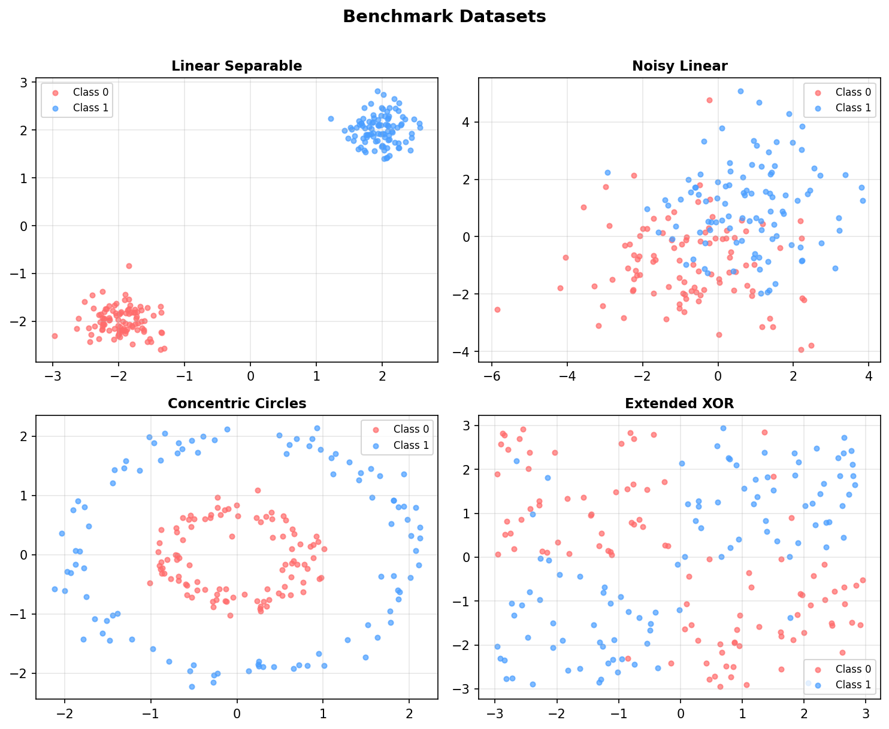
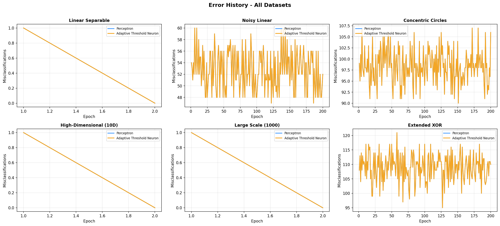
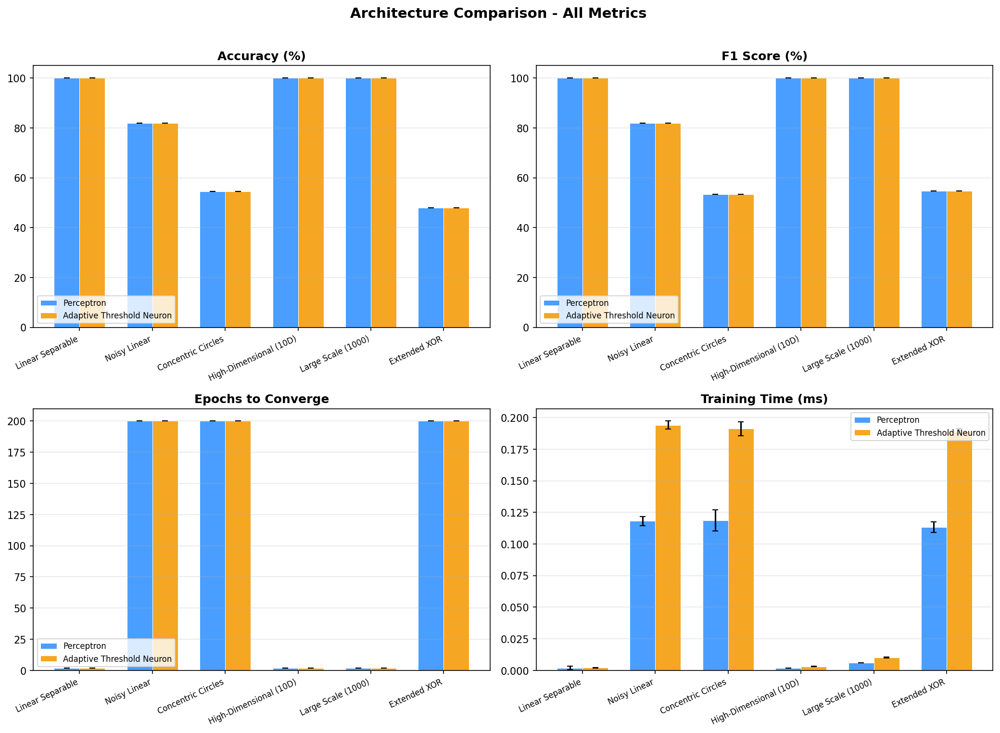
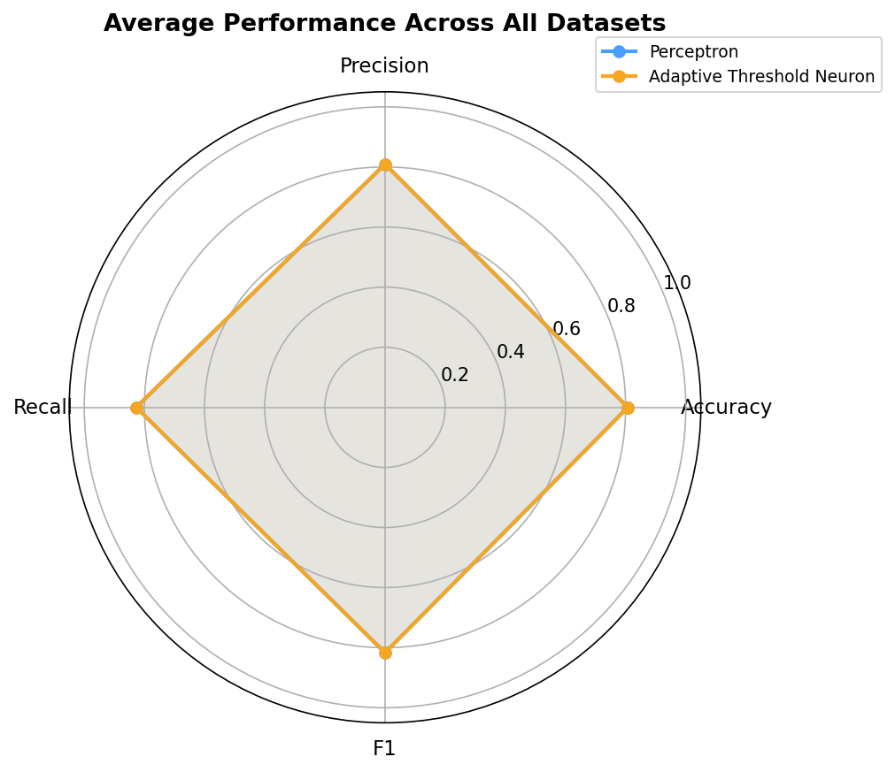

Public benchmark results comparing all architectures across 6 datasets of varying difficulty. Each architecture is tested 5 times for stability.
Six synthetic datasets designed to test different capabilities: linear separability, noise tolerance, non-linear patterns, high dimensionality, and scalability.

Misclassifications per epoch for each architecture on each dataset. Lower is better.

Accuracy, F1 score, epochs to converge, and training time across all datasets. Error bars show standard deviation across 5 runs.

Radar chart showing average performance across all datasets for each architecture.

Based on the benchmark results, the Adaptive Threshold Neuron performs identically to the Perceptron in accuracy and convergence on all datasets, but is approximately 1.6x slower due to the additional threshold update computation. Both architectures fail on non-linearly separable datasets (Concentric Circles, Extended XOR) as expected for single-layer linear classifiers.
The adaptive threshold provides no accuracy advantage over the perceptron's bias-based approach. The threshold converges to a small positive value (0.01) which is functionally equivalent to a bias. The extra computation makes it slower with no benefit — this divergence is worse than real history.